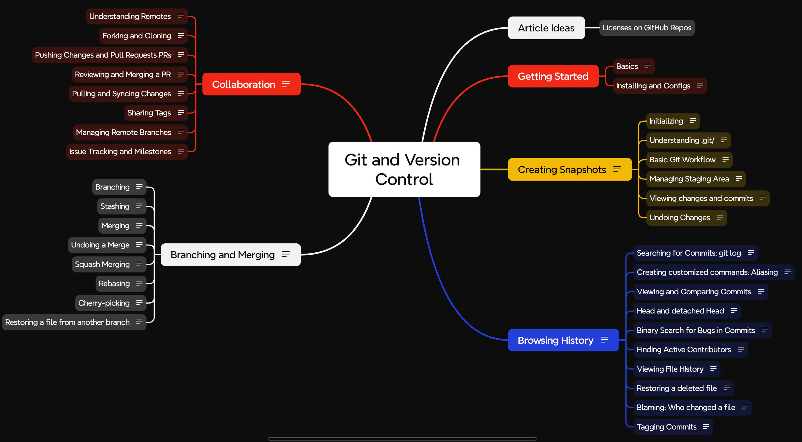

Git and Version Control
Git & Version Control: The Complete Developer’s Guide
| By Shaswat Gupta |
A structured approach to mastering version control for developers at all levels.
Link to Course: Git and Version Control Course

Why Git Matters
Version control is fundamental to modern software development. This course bridges the gap between basic Git usage and genuine proficiency—helping you:
- Recover confidently when mistakes happen
- Maintain a clean, meaningful project history
- Collaborate effectively with other developers
- Manage complex features without code conflicts
What’s Inside
Five carefully structured learning modules with practical applications:
- Getting Started - Installation, configuration, and version control fundamentals
- Creating Snapshots - Strategic commits, .gitignore management, and staging workflows
- Browsing History - Searching logs, comparing changes, and tracking code evolution
- Branch, Merge & Conflict - Parallel development techniques and clean conflict resolution
- Collaboration - Remote repositories, pull requests, and team workflow integration
Thoughtfully Designed Resources
This isn’t just documentation—it’s a complete learning system:
- Comprehensive Notes - Clear explanations with practical examples in each module
- Reference Cheat Sheet - Essential commands organized by workflow context
- Visual Mind Map - Connecting concepts to strengthen your mental model of Git
Learn Your Way
Whether you’re new to development or looking to refine your skills:
- Follow the structured path from basics to advanced techniques
- Jump to specific modules to address immediate challenges
- Keep the cheat sheet handy during your daily work
- Revisit the mind map to reinforce how concepts interconnect
Practical Value
This course focuses on the Git skills developers actually use daily—not just commands, but workflows and strategies that solve real problems and improve your efficiency.
Contributing
Your insights can help improve this resource. Open an issue or submit a pull request if you have suggestions for enhancement.
License
Released under the MIT License. See LICENSE for details.
Build confidence, save time, and improve collaboration with solid Git fundamentals.